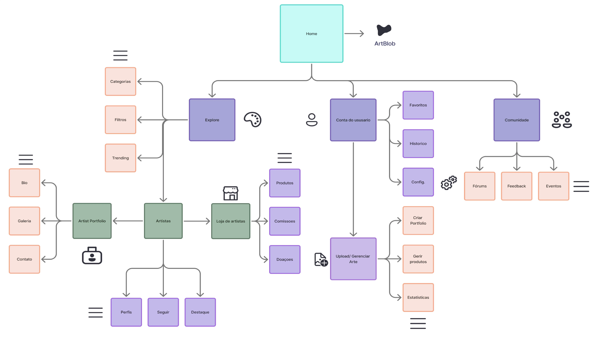
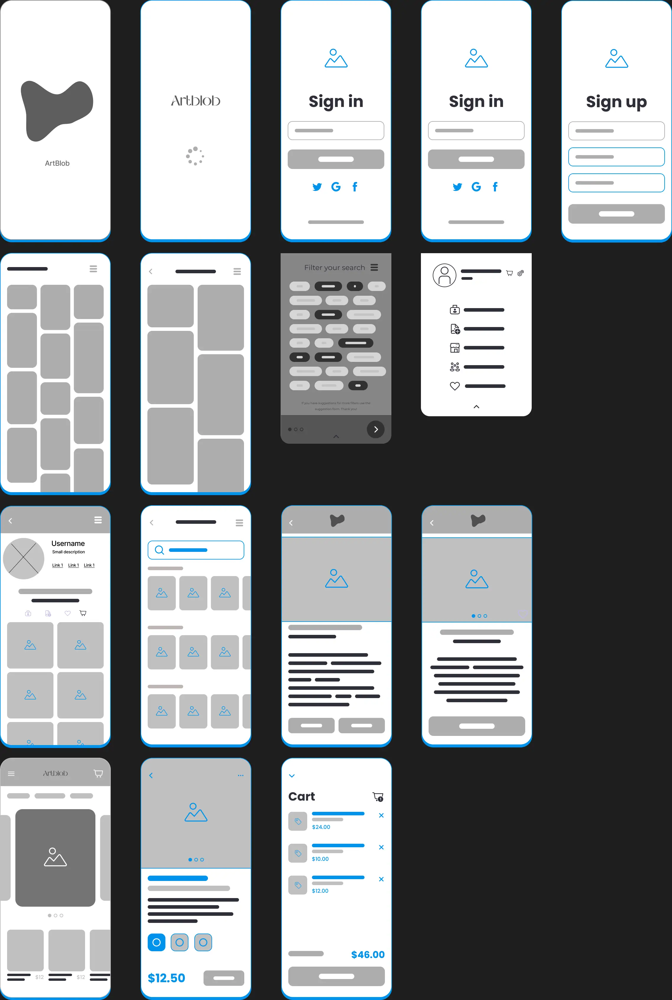
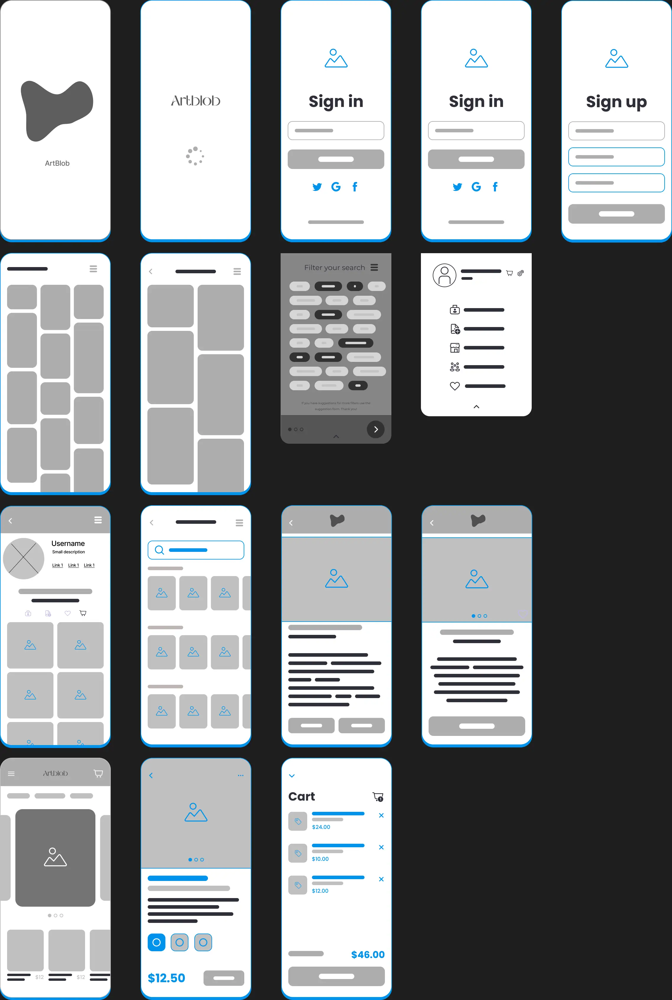

Artblob
Visão Geral do Projeto
ArtBlop é uma aplicação criada para facilitar a vida de artistas visuais, reunindo num só espaço a criação de portfólios, venda de arte e interação com o público. O projeto surgiu da necessidade de oferecer uma alternativa mais focada e intuitiva para quem quer mostrar e valorizar o seu trabalho artístico online sem a preocupação do AI para quem cria e para quem compra.
O Desafio e a Solução
Desafio: Criar uma plataforma para ambos artistas (de todos tipos de media) e amantes das artes e da cultura.
Solução:Implementar varias formas de partilha de trabalho com uma explore page, foruns e até formas de publicar e partilhar em comunidades com posts/ publicações (inspirado no Reddit e Deviantart/ Artstation). Controlo do AI (uso de partilha de arte AI banida), etc.
Legenda: Mapa da estrutura geral da app.
Processo de Design
O projeto foca nas necessidades dos artistas através da pesquisa, na organização da plataforma com wireframes e no desenvolvimento de uma prototipagem básica para visualizar as principais funcionalidades e o fluxo do utilizador.

 


Legenda: Exemplos de etapas do processo de design, personas, low-fi e high-fi.
Resultados e Aprendizados
O projeto permitiu-me aplicar varias etapas do design digital, da pesquisa à prototipagem. Ao longo do processo, aprendi a importância de pensar na experiência do utilizador desde o início e equilibrar criatividade com funcionalidade.